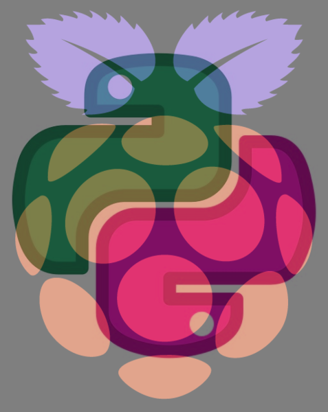

Un exemple de programme :
from PIL import Image
#charger les 2 images
image1 = Image.open("raspberry.png")
image2 = Image.open("python.png")
# créer une nouvelle image vide
largueur,hauteur=image1.size
image_resultat=Image.new("RGB",(largueur,hauteur))
#parcourir tous les pixels
for x in range ( largueur):
for y in range(hauteur):
p1=image1.getpixel((x,y))
r1=p1[0]
g1=p1[1]
b1=p1[2]
p2=image2.getpixel((x,y))
r2=p2[0]
g2=p2[1]
b2=p2[2]
#moyenne des couleurs
r=(r1+r2)//2
g=(g1+g2)//2
b=(b1+b2)//2
#placer le pixel dans l'image
image_resultat.putpixel((x,y),(r,b,g))
#sauvegarde + afficher
image_resultat.save("image_supposer.png")
image_resultat.show()
